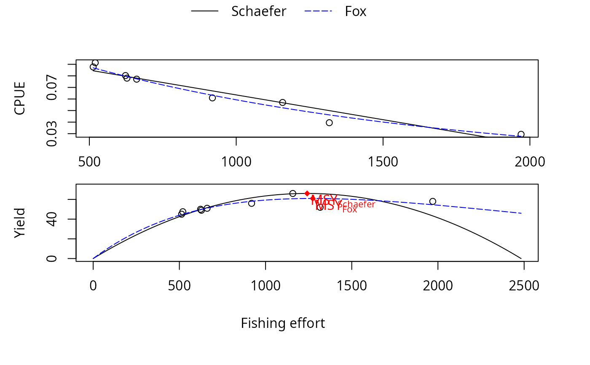

Production models are holistic models, which can be used to estimate maximum sustainable yield (MSY) and virgin biomass. This function uses the equilibrium approach to estimate parameters (Schaefer model and Fox model).
Value
A list with the input parameters and following list objects:
Schaefer_lm: intercept and slope of linear model following the Schaefer model,
Fox_lm: intercept and slope of linear model following the Fox model,
Schaefer_MSY: MSY according to Schaefer model,
Schaefer_fMSY: fishing effort yielding in MSY according to Schaefer model,
Schaefer_Bv: virgin biomass according to Schaefer model,
ln_CPUE: natural logarithm of CPUE values,
Fox_MSY: MSY according to Fox model,
Fox_fMSY: fishing effort yielding in MSY according to Fox model,
Fox_Bv: virgin biomass according to Fox model.
Details
Production models are also called surplus production models or
biomass dynamic models. They can be applied if sufficient data are available: effort
and yield parameters have to be expended over a certain number of years. Furthermore,
the fishing effort must have undergone substantial changes over the period covered
(Sparre and Venema, 1998). Either the catch per unit of effort (CPUE) is inserted
into the model directly (objectname: CPUE) or the CPUE is calculated from
the catch and effort, then these two vectors should have required units. There
are three ways of estimating paramaters of production models, (i) assuming
equlibrium conditions, (ii) transforming equation to linear form, or (iii)
time-series fitting (Hilborn and Walters, 1992). The first approach corresponds
to the Schaefer and Fox model and thus the methodology of this function.
The authors recommend to use dynamic fitting methods when possible rather than
the equilibrium approach. For dynamic production models please refer
to prod_mod_ts.
References
Fox, W. W. Jr., 1970. An exponential surplus-yield model for optimizing exploited fish populations. Trans.Am.Fish.Soc., 99:80-88
Graham, M., 1935. Modern theory of exploiting a fishery and application to North Sea trawling. J.Cons.CIEM, 10(3):264-274
Hilborn, R., Walters, C. J. (1992). Quantitative fisheries stock assessment: choice, dynamics and uncertainty. Reviews in Fish Biology and Fisheries, 2(2), 177-178.
Schaefer, M., 1954. Some aspects of the dynamics of populations important to the management of the commercial marine fisheries. Bull.I-ATTC/Bol. CIAT, 1(2):27-56
Schaefer, M., 1957. A study of the dynamics of the fishery for yellowfin tuna of the eastern tropical Pacific Ocean [in English and Spanish]. Ibid., 2(6): 245-285
Sparre, P., Venema, S.C., 1998. Introduction to tropical fish stock assessment. Part 1. Manual. FAO Fisheries Technical Paper, (306.1, Rev. 2). 407 p.
Examples
data(trawl_fishery_Java)
prod_mod(data = trawl_fishery_Java, plot = TRUE)

#> $year
#> [1] 1969 1970 1971 1972 1973 1974 1975 1976 1977
#>
#> $Y
#> [1] 50.0 49.0 47.5 45.0 51.0 56.0 66.0 58.0 52.0
#>
#> $f
#> [1] 623 628 520 513 661 919 1158 1970 1317
#>
#> $CPUE
#> [1] 0.08025682 0.07802548 0.09134615 0.08771930 0.07715582 0.06093580 0.05699482
#> [8] 0.02944162 0.03948368
#>
#> $Schaefer_lm
#> [1] 1.063816e-01 -4.285411e-05
#>
#> $Fox_lm
#> [1] -2.0398170559 -0.0007851094
#>
#> $Schaefer_MSY
#> [1] 66.02075
#>
#> $Schaefer_fMSY
#> [1] 1241.206
#>
#> $Schaefer_Bv
#> [1] 0.1063816
#>
#> $ln_CPUE
#> [1] -2.522524 -2.550720 -2.393099 -2.433613 -2.561928 -2.797934 -2.864795
#> [8] -3.525346 -3.231868
#>
#> $Fox_MSY
#> [1] 60.93882
#>
#> $Fox_fMSY
#> [1] 1273.708
#>
#> $Fox_Bv
#> [1] 0.1300525
#>
#> attr(,"class")
#> [1] "prod_mod"